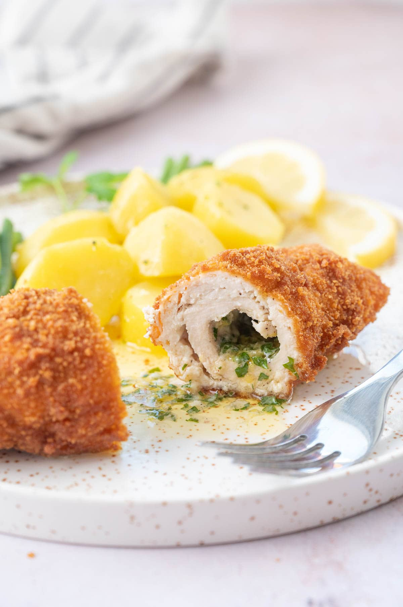

Chiken Kyiv

Description
Chicken Kyiv is a very popular in Eastern Europe chicken dish. It’s a chicken fillet stuffed with parsley garlic butter, rolled up, breaded, and fried. Butter melts inside and oozes out to your plate when you cut the chicken, it makes it really moist and very flavorful.
Ingridients
- 8 skinless, boneless chicken fillets
- 225g dried breadcrumbs
- 75g parmesan, grated
- 5 eggs, beaten
- 100g plain flour
- pinch paprika
- 4 tbsp sunflower or vegetable oil, for frying
- 4 garlic cloves, crushed
- 2 tbsp finely chopped parsley
- 200g butter, softened
- ½ lemon, juiced
Recipe
- Make the compound butter: Combine the soft butter with chopped parsley, grated lemon zest, finely chopped garlic cloves, and season it with salt and pepper. Place in the fridge.
- Pound chicken breasts into cutlets: If you have small or medium chicken breasts – place them on a chopping board and cover them with plastic foil. Pound them with a meat mallet into thin cutlets. Try to pound them from the center to the left and right side to create cutlets that are more square-shaped than rectangular-shaped. Be careful not to tear the meat. The borders of the cutlet (about 1/2 inch or 1cm) should be pounded very thinly.
- Wrap the cutlets around butter and shape the cutlets: season the fillets with salt and pepper on both sides and place 1/4 of the chilled butter (shape it roughly into a log) on the right side of each cutlet. Fold the upper and bottom part of the cutlet over the butter, then roll up the cutlet from the right to the left side. Form a spindle-shaped log, tightly pressing the edges of the cutlets, making sure the butter is tightly closed in the middle.
Spindle shape is the most traditional but you could just wrap these cutlets like a burrito or a wrap.
- Chill cutlets: Place the cutlets for 10 minutes in the fridge (this will help the cutlets to keep their shape and not fall apart while frying, you can leave them longer in the fridge).
- Prepare your breading station: Prepare 3 bowls: one with flour, the second with beaten eggs, and the third with breadcrumbs.
- Bread the cutlets: Dredge each cutlet in the flour, then dip in the egg mixture, then coat it in breadcrumbs. Dip the cutlet again in the egg and coat again in breadcrumbs (this is optional but it makes a thicker breading).
- Deep-fry the cutlets (see below an alternative preparation method): add 4-6 cups of oil (the amount depends on the size of the pot) into a medium pot and heat to 340°F-350°F (170-180°C). When the oil is hot, fry 2 cutlets at a time, for about 8-9 minutes for smaller cutlets and 10-11 minutes for bigger cutlets.
Transfer to a plate lined with parchment paper, check the temperature in the center of the thickest part of each cutlet – it should be 160°F (71°C) and it should come to the safe temperature for poultry while resting – 165°C (74°C). Repeat with the remaining cutlets.